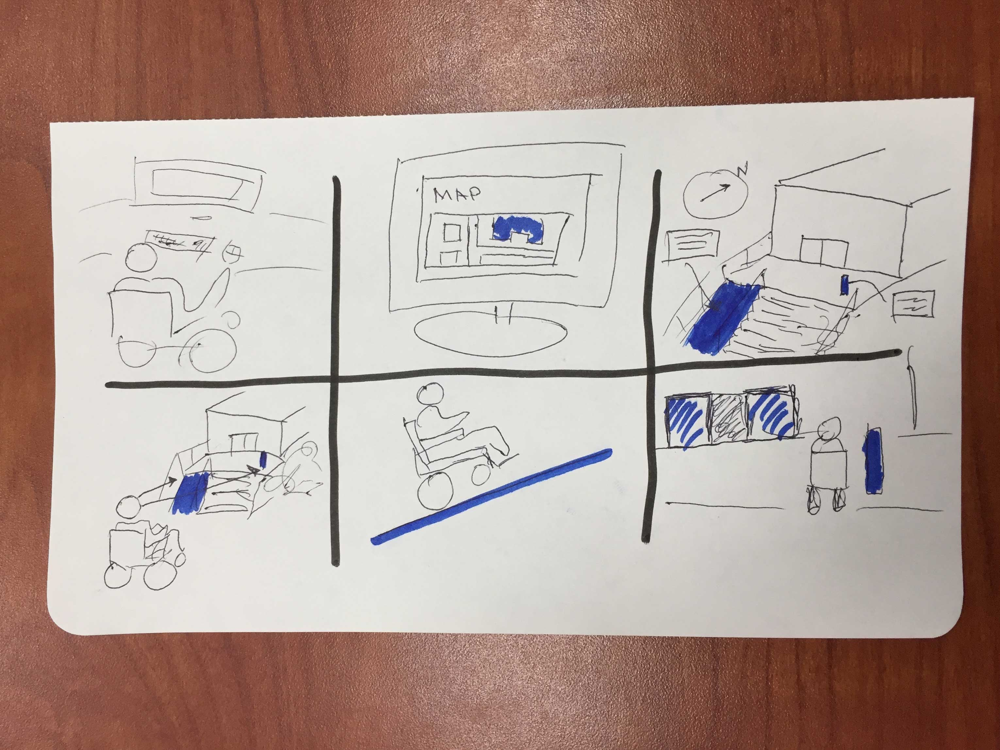

In my first storyboard, I am conveying the main demographic in the first frame—people with disabilities. In this case, a person in a wheelchair who is looking up the building in which they want to visit. Once they find their building on the map, they click on it, which then shows them the building with the accessibility features highlighted. Then, when the person visits the building, they know exactly what kind of accessibility features there are and also where to find the accessible areas without having to look for them.
After the first quick sketch, I realized the lines could be clearer. I also wanted to included text boxes with information about the building features. The blue highlights help convey the featured aspects clearly, so I made sure to utilize that as best I could without being too distracting.